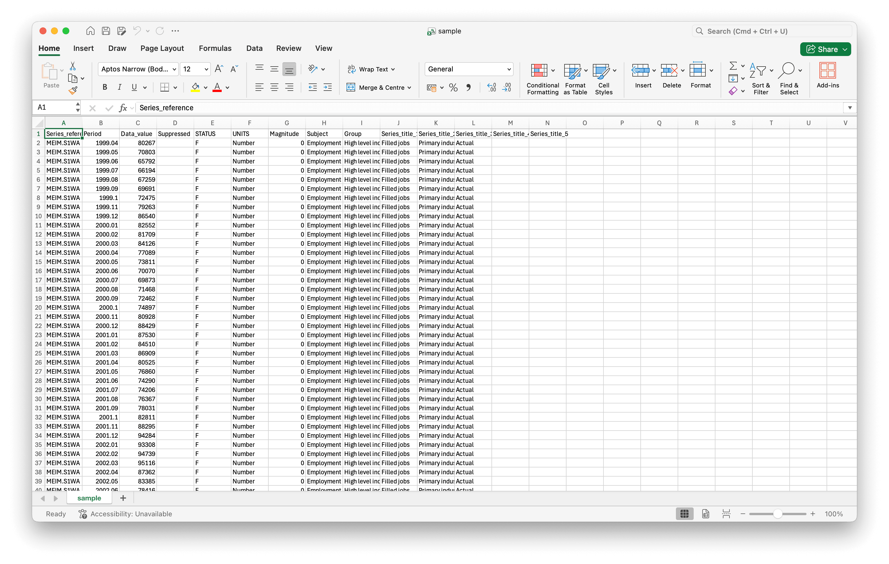
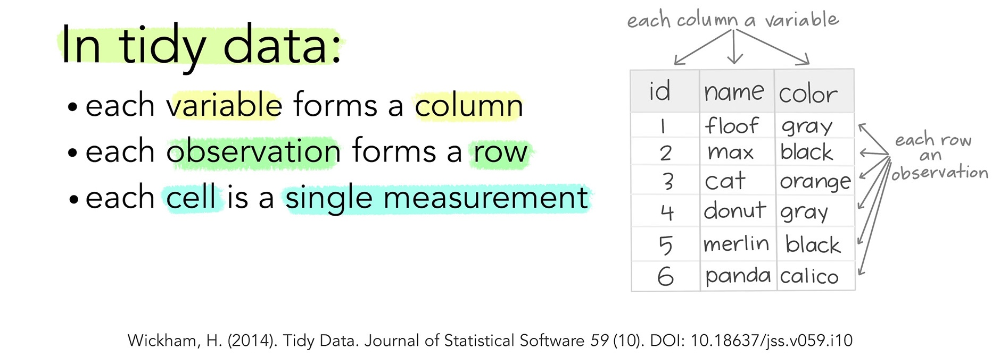
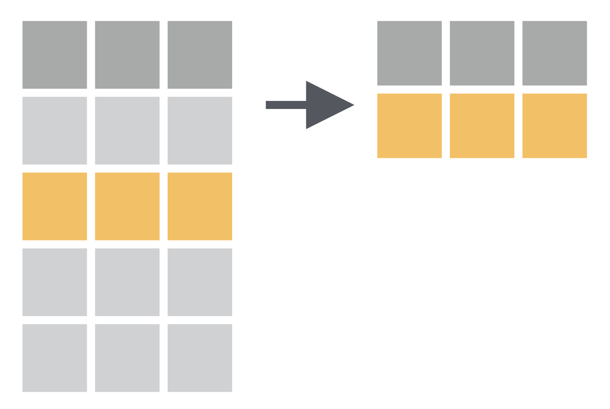
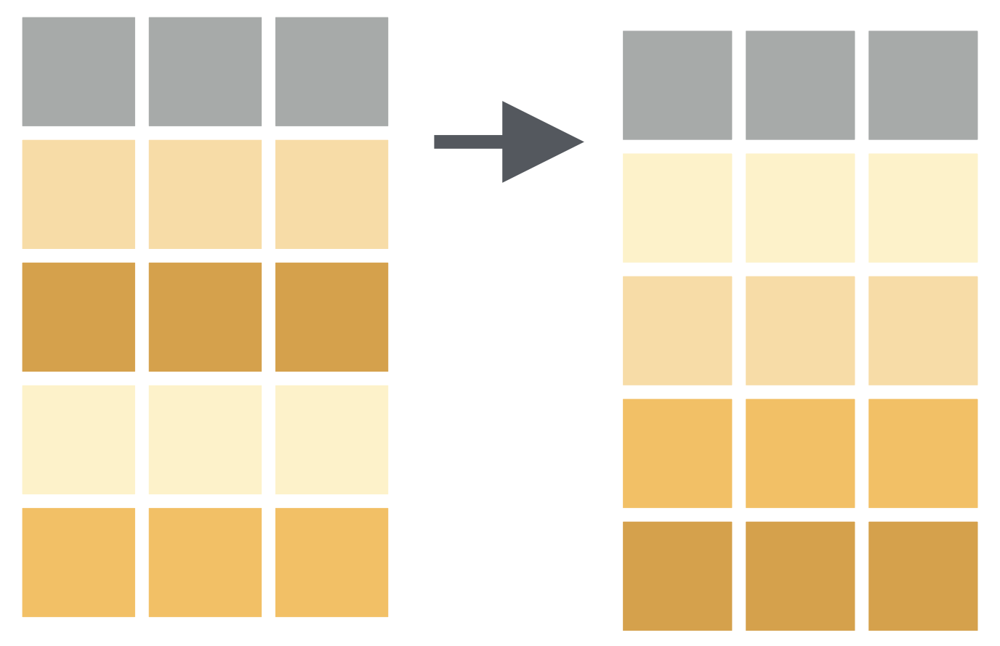
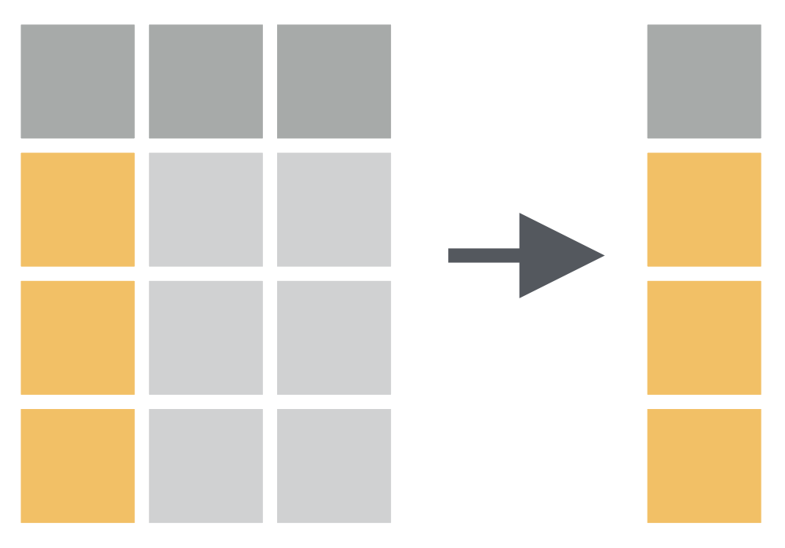
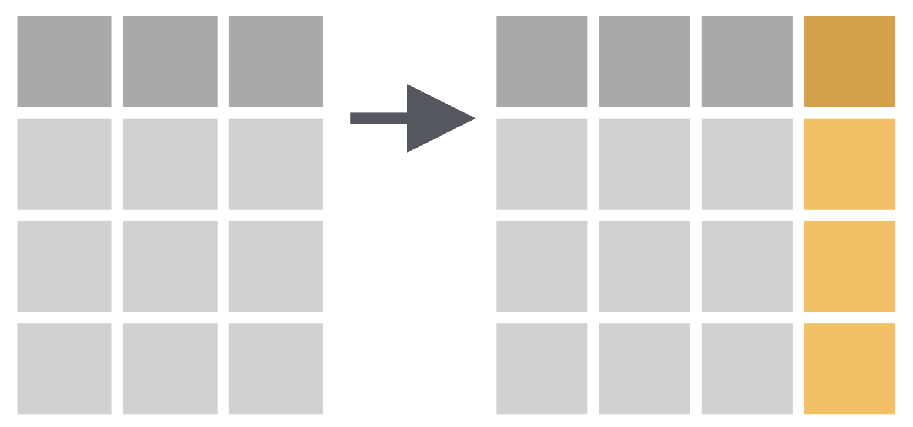
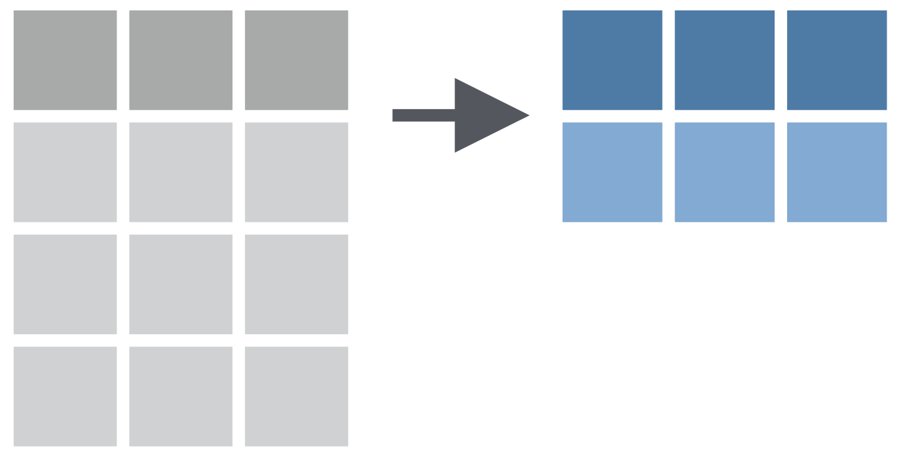

Data
Transformation
Data

Data Structure

Tidy Data Structure

Image source: Allison Horst
Data Value Types
| Data type | Example Values | Column Type |
|---|---|---|
| Logical | TRUE, FALSE | lgl |
| Integer | 1L, 4L, 10L | int |
| Double | 1.5, 12, 5.6 | dbl |
| Character | “A”, “B”, “A” | chr |
| Factor | factor(“A”, “B”) | fct |
What we will cover
Data Import (
readr,readxl)First Look at Data (
dplyr,skimr,janitor)Data Cleaning (
janitor,tidyr)Data Transformation (
dplyrverbs)
Setup
Load R Packages
Install any missing package with install.packages("package_name")
here Package

Image artist: Allison Horst
here Package
“to enable easy file referencing in projects”
“uses the top-level directory of a project to easily build paths to files”
More info: https://here.r-lib.org/
DATA
IMPORTING
Import a Local CSV file
The readr package reads rectangular data files.
View your Data
# A tibble: 33,644 × 14
Series_reference Period Data_value Suppressed STATUS UNITS Magnitude Subject
<chr> <dbl> <dbl> <lgl> <chr> <chr> <dbl> <chr>
1 MEIM.S1WA 1999. 80267 NA F Number 0 Employ…
2 MEIM.S1WA 1999. 70803 NA F Number 0 Employ…
3 MEIM.S1WA 1999. 65792 NA F Number 0 Employ…
4 MEIM.S1WA 1999. 66194 NA F Number 0 Employ…
5 MEIM.S1WA 1999. 67259 NA F Number 0 Employ…
6 MEIM.S1WA 1999. 69691 NA F Number 0 Employ…
7 MEIM.S1WA 1999. 72475 NA F Number 0 Employ…
8 MEIM.S1WA 1999. 79263 NA F Number 0 Employ…
9 MEIM.S1WA 1999. 86540 NA F Number 0 Employ…
10 MEIM.S1WA 2000. 82552 NA F Number 0 Employ…
# ℹ 33,634 more rows
# ℹ 6 more variables: Group <chr>, Series_title_1 <chr>, Series_title_2 <chr>,
# Series_title_3 <chr>, Series_title_4 <chr>, Series_title_5 <lgl>Import with column type control
Common read_* functions
| Function | File type |
|---|---|
read_csv() |
Comma-separated (.csv) |
read_tsv() |
Tab-separated (.tsv) |
read_delim() |
Any delimiter |
read_excel() |
Excel (.xlsx, .xls) |
read_rds() |
R binary (.rds) |
Your Turn
Install the
palmerpenguinspackage.Load/call the
palmerpenguinspackage.View the
penguinsdataset.What data types are the columns/variables?
Answers
# A tibble: 344 × 8
species island bill_length_mm bill_depth_mm flipper_length_mm body_mass_g
<fct> <fct> <dbl> <dbl> <int> <int>
1 Adelie Torgersen 39.1 18.7 181 3750
2 Adelie Torgersen 39.5 17.4 186 3800
3 Adelie Torgersen 40.3 18 195 3250
4 Adelie Torgersen NA NA NA NA
5 Adelie Torgersen 36.7 19.3 193 3450
6 Adelie Torgersen 39.3 20.6 190 3650
7 Adelie Torgersen 38.9 17.8 181 3625
8 Adelie Torgersen 39.2 19.6 195 4675
9 Adelie Torgersen 34.1 18.1 193 3475
10 Adelie Torgersen 42 20.2 190 4250
# ℹ 334 more rows
# ℹ 2 more variables: sex <fct>, year <int>FIRST LOOK
AT DATA
Dimensions of Data
Total number of rows = Sample size
Total number of columns = Variables
Sample Size & Variables in Data
[1] 344 8Variables in penguins data
Species of Penguins

Bill data of Penguins

Top of the Data using head()
# A tibble: 6 × 8
species island bill_length_mm bill_depth_mm flipper_length_mm body_mass_g
<fct> <fct> <dbl> <dbl> <int> <int>
1 Adelie Torgersen 39.1 18.7 181 3750
2 Adelie Torgersen 39.5 17.4 186 3800
3 Adelie Torgersen 40.3 18 195 3250
4 Adelie Torgersen NA NA NA NA
5 Adelie Torgersen 36.7 19.3 193 3450
6 Adelie Torgersen 39.3 20.6 190 3650
# ℹ 2 more variables: sex <fct>, year <int>Bottom of the Data using tail()
# A tibble: 6 × 8
species island bill_length_mm bill_depth_mm flipper_length_mm body_mass_g
<fct> <fct> <dbl> <dbl> <int> <int>
1 Chinstrap Dream 45.7 17 195 3650
2 Chinstrap Dream 55.8 19.8 207 4000
3 Chinstrap Dream 43.5 18.1 202 3400
4 Chinstrap Dream 49.6 18.2 193 3775
5 Chinstrap Dream 50.8 19 210 4100
6 Chinstrap Dream 50.2 18.7 198 3775
# ℹ 2 more variables: sex <fct>, year <int>Data overview using glimpse()
Rows: 344
Columns: 8
$ species <fct> Adelie, Adelie, Adelie, Adelie, Adelie, Adelie, Adel…
$ island <fct> Torgersen, Torgersen, Torgersen, Torgersen, Torgerse…
$ bill_length_mm <dbl> 39.1, 39.5, 40.3, NA, 36.7, 39.3, 38.9, 39.2, 34.1, …
$ bill_depth_mm <dbl> 18.7, 17.4, 18.0, NA, 19.3, 20.6, 17.8, 19.6, 18.1, …
$ flipper_length_mm <int> 181, 186, 195, NA, 193, 190, 181, 195, 193, 190, 186…
$ body_mass_g <int> 3750, 3800, 3250, NA, 3450, 3650, 3625, 4675, 3475, …
$ sex <fct> male, female, female, NA, female, male, female, male…
$ year <int> 2007, 2007, 2007, 2007, 2007, 2007, 2007, 2007, 2007…Summary using summary()
species island bill_length_mm bill_depth_mm
Adelie :152 Biscoe :168 Min. :32.10 Min. :13.10
Chinstrap: 68 Dream :124 1st Qu.:39.23 1st Qu.:15.60
Gentoo :124 Torgersen: 52 Median :44.45 Median :17.30
Mean :43.92 Mean :17.15
3rd Qu.:48.50 3rd Qu.:18.70
Max. :59.60 Max. :21.50
NAs :2 NAs :2
flipper_length_mm body_mass_g sex year
Min. :172.0 Min. :2700 female:165 Min. :2007
1st Qu.:190.0 1st Qu.:3550 male :168 1st Qu.:2007
Median :197.0 Median :4050 NAs : 11 Median :2008
Mean :200.9 Mean :4202 Mean :2008
3rd Qu.:213.0 3rd Qu.:4750 3rd Qu.:2009
Max. :231.0 Max. :6300 Max. :2009
NAs :2 NAs :2 Rich Summary using skim()
| Name | penguins |
| Number of rows | 344 |
| Number of columns | 8 |
| _______________________ | |
| Column type frequency: | |
| factor | 3 |
| numeric | 5 |
| ________________________ | |
| Group variables | None |
Variable type: factor
| skim_variable | n_missing | complete_rate | ordered | n_unique | top_counts |
|---|---|---|---|---|---|
| species | 0 | 1.00 | FALSE | 3 | Ade: 152, Gen: 124, Chi: 68 |
| island | 0 | 1.00 | FALSE | 3 | Bis: 168, Dre: 124, Tor: 52 |
| sex | 11 | 0.97 | FALSE | 2 | mal: 168, fem: 165 |
Variable type: numeric
| skim_variable | n_missing | complete_rate | mean | sd | p0 | p25 | p50 | p75 | p100 | hist |
|---|---|---|---|---|---|---|---|---|---|---|
| bill_length_mm | 2 | 0.99 | 43.92 | 5.46 | 32.1 | 39.23 | 44.45 | 48.5 | 59.6 | ▃▇▇▆▁ |
| bill_depth_mm | 2 | 0.99 | 17.15 | 1.97 | 13.1 | 15.60 | 17.30 | 18.7 | 21.5 | ▅▅▇▇▂ |
| flipper_length_mm | 2 | 0.99 | 200.92 | 14.06 | 172.0 | 190.00 | 197.00 | 213.0 | 231.0 | ▂▇▃▅▂ |
| body_mass_g | 2 | 0.99 | 4201.75 | 801.95 | 2700.0 | 3550.00 | 4050.00 | 4750.0 | 6300.0 | ▃▇▆▃▂ |
| year | 0 | 1.00 | 2008.03 | 0.82 | 2007.0 | 2007.00 | 2008.00 | 2009.0 | 2009.0 | ▇▁▇▁▇ |
Frequency Tables using count()
Beautiful Tables
More info kableExtra
Beautiful Tables
| Species | Number of Penguins |
|---|---|
| Adelie | 152 |
| Gentoo | 124 |
| Chinstrap | 68 |
Wait! What is |>
This is called native pipe operator
|>let you “pipe” an object forward to a function or call expressionallowing you to express a sequence of operations that transform an object.
ctrl + shift + m =
|>
Read more about pipes here
Your Turn
Using the penguins dataset:
Use
skim()to get a summary.How many missing values in each variable?
Count how many penguins are on each island.
Count penguins of each
sexexist perspecies.
Answers
DATA
CLEANING
Messy Variable Names
[1] "Series_reference" "Period" "Data_value" "Suppressed"
[5] "STATUS" "UNITS" "Magnitude" "Subject"
[9] "Group" "Series_title_1" "Series_title_2" "Series_title_3"
[13] "Series_title_4" "Series_title_5" - Spaces,
- Capital letters,
- Special characters
Messy Dataset
# A tibble: 3 × 3
`First Name` `AGE (Years)` `Test Score%`
<chr> <dbl> <dbl>
1 Priya 25 88
2 Rahul 32 91
3 Sunita 28 76Package janitor

Image artist: Allison Horst
Clean Column Names with janitor
Before
[1] "Series_reference" "Period" "Data_value" "Suppressed"
[5] "STATUS" "UNITS" "Magnitude" "Subject"
[9] "Group" "Series_title_1" "Series_title_2" "Series_title_3"
[13] "Series_title_4" "Series_title_5" Clean Column Names with janitor
Missing Values NA
Rows: 344
Columns: 8
$ species <fct> Adelie, Adelie, Adelie, Adelie, Adelie, Adelie, Adel…
$ island <fct> Torgersen, Torgersen, Torgersen, Torgersen, Torgerse…
$ bill_length_mm <dbl> 39.1, 39.5, 40.3, NA, 36.7, 39.3, 38.9, 39.2, 34.1, …
$ bill_depth_mm <dbl> 18.7, 17.4, 18.0, NA, 19.3, 20.6, 17.8, 19.6, 18.1, …
$ flipper_length_mm <int> 181, 186, 195, NA, 193, 190, 181, 195, 193, 190, 186…
$ body_mass_g <int> 3750, 3800, 3250, NA, 3450, 3650, 3625, 4675, 3475, …
$ sex <fct> male, female, female, NA, female, male, female, male…
$ year <int> 2007, 2007, 2007, 2007, 2007, 2007, 2007, 2007, 2007…Missing Values NA
species island bill_length_mm bill_depth_mm
Adelie :152 Biscoe :168 Min. :32.10 Min. :13.10
Chinstrap: 68 Dream :124 1st Qu.:39.23 1st Qu.:15.60
Gentoo :124 Torgersen: 52 Median :44.45 Median :17.30
Mean :43.92 Mean :17.15
3rd Qu.:48.50 3rd Qu.:18.70
Max. :59.60 Max. :21.50
NAs :2 NAs :2
flipper_length_mm body_mass_g sex year
Min. :172.0 Min. :2700 female:165 Min. :2007
1st Qu.:190.0 1st Qu.:3550 male :168 1st Qu.:2007
Median :197.0 Median :4050 NAs : 11 Median :2008
Mean :200.9 Mean :4202 Mean :2008
3rd Qu.:213.0 3rd Qu.:4750 3rd Qu.:2009
Max. :231.0 Max. :6300 Max. :2009
NAs :2 NAs :2 Removing Missing Values
species island bill_length_mm bill_depth_mm
Adelie :146 Biscoe :163 Min. :32.10 Min. :13.10
Chinstrap: 68 Dream :123 1st Qu.:39.50 1st Qu.:15.60
Gentoo :119 Torgersen: 47 Median :44.50 Median :17.30
Mean :43.99 Mean :17.16
3rd Qu.:48.60 3rd Qu.:18.70
Max. :59.60 Max. :21.50
flipper_length_mm body_mass_g sex year
Min. :172 Min. :2700 female:165 Min. :2007
1st Qu.:190 1st Qu.:3550 male :168 1st Qu.:2007
Median :197 Median :4050 Median :2008
Mean :201 Mean :4207 Mean :2008
3rd Qu.:213 3rd Qu.:4775 3rd Qu.:2009
Max. :231 Max. :6300 Max. :2009 Specific Column Missing Values
species island bill_length_mm bill_depth_mm
Adelie :151 Biscoe :167 Min. :32.10 Min. :13.10
Chinstrap: 68 Dream :124 1st Qu.:39.23 1st Qu.:15.60
Gentoo :123 Torgersen: 51 Median :44.45 Median :17.30
Mean :43.92 Mean :17.15
3rd Qu.:48.50 3rd Qu.:18.70
Max. :59.60 Max. :21.50
flipper_length_mm body_mass_g sex year
Min. :172.0 Min. :2700 female:165 Min. :2007
1st Qu.:190.0 1st Qu.:3550 male :168 1st Qu.:2007
Median :197.0 Median :4050 NAs : 9 Median :2008
Mean :200.9 Mean :4202 Mean :2008
3rd Qu.:213.0 3rd Qu.:4750 3rd Qu.:2009
Max. :231.0 Max. :6300 Max. :2009 Remove Duplicates
Rename Columns
Rows: 344
Columns: 8
$ species_penguins <fct> Adelie, Adelie, Adelie, Adelie, Adelie, Adelie, Adel…
$ island <fct> Torgersen, Torgersen, Torgersen, Torgersen, Torgerse…
$ bill_length_mm <dbl> 39.1, 39.5, 40.3, NA, 36.7, 39.3, 38.9, 39.2, 34.1, …
$ bill_depth_mm <dbl> 18.7, 17.4, 18.0, NA, 19.3, 20.6, 17.8, 19.6, 18.1, …
$ flipper_length_mm <int> 181, 186, 195, NA, 193, 190, 181, 195, 193, 190, 186…
$ body_mass_g <int> 3750, 3800, 3250, NA, 3450, 3650, 3625, 4675, 3475, …
$ sex_penguins <fct> male, female, female, NA, female, male, female, male…
$ year <int> 2007, 2007, 2007, 2007, 2007, 2007, 2007, 2007, 2007…Your Turn
Using penguins:
Drop rows where
body_mass_gorsexis missing.Rename
bill_length_mmtobill_lengthandbill_depth_mmtobill_depth.
Answers
species island bill_length_mm bill_depth_mm
Adelie :146 Biscoe :163 Min. :32.10 Min. :13.10
Chinstrap: 68 Dream :123 1st Qu.:39.50 1st Qu.:15.60
Gentoo :119 Torgersen: 47 Median :44.50 Median :17.30
Mean :43.99 Mean :17.16
3rd Qu.:48.60 3rd Qu.:18.70
Max. :59.60 Max. :21.50
flipper_length_mm body_mass_g sex year
Min. :172 Min. :2700 female:165 Min. :2007
1st Qu.:190 1st Qu.:3550 male :168 1st Qu.:2007
Median :197 Median :4050 Median :2008
Mean :201 Mean :4207 Mean :2008
3rd Qu.:213 3rd Qu.:4775 3rd Qu.:2009
Max. :231 Max. :6300 Max. :2009 Answers
[1] "species" "island" "bill_length"
[4] "bill_depth" "flipper_length_mm" "body_mass_g"
[7] "sex" "year" DATA
TRANSFORMATION
Data Transformation
“to create some new variables or summaries … to rename the variables or reorder the observations”
dplyr package
dplyr basics
The first argument is always a data frame.
The subsequent arguments typically describe which columns to operate on using the variable names (without quotes).
The output is always a new data frame.
Primary dplyr verbs:
| Verb | What it does |
|---|---|
filter() |
Keep rows matching a condition |
select() |
Keep or drop columns |
mutate() |
Add or change columns |
arrange() |
Sort rows |
summarise() |
Collapse rows to summaries |
group_by() |
Combine for grouped operations |
filter() function - Subset rows
“allows you to keep rows based on the values of the columns”

filter() function
# A tibble: 168 × 8
species island bill_length_mm bill_depth_mm flipper_length_mm body_mass_g
<fct> <fct> <dbl> <dbl> <int> <int>
1 Adelie Torgersen 39.1 18.7 181 3750
2 Adelie Torgersen 39.3 20.6 190 3650
3 Adelie Torgersen 39.2 19.6 195 4675
4 Adelie Torgersen 38.6 21.2 191 3800
5 Adelie Torgersen 34.6 21.1 198 4400
6 Adelie Torgersen 42.5 20.7 197 4500
7 Adelie Torgersen 46 21.5 194 4200
8 Adelie Biscoe 37.7 18.7 180 3600
9 Adelie Biscoe 38.2 18.1 185 3950
10 Adelie Biscoe 38.8 17.2 180 3800
# ℹ 158 more rows
# ℹ 2 more variables: sex <fct>, year <int>filter() function
# A tibble: 67 × 8
species island bill_length_mm bill_depth_mm flipper_length_mm body_mass_g
<fct> <fct> <dbl> <dbl> <int> <int>
1 Gentoo Biscoe 50 16.3 230 5700
2 Gentoo Biscoe 50 15.2 218 5700
3 Gentoo Biscoe 47.6 14.5 215 5400
4 Gentoo Biscoe 46.7 15.3 219 5200
5 Gentoo Biscoe 46.8 15.4 215 5150
6 Gentoo Biscoe 49 16.1 216 5550
7 Gentoo Biscoe 48.4 14.6 213 5850
8 Gentoo Biscoe 49.3 15.7 217 5850
9 Gentoo Biscoe 49.2 15.2 221 6300
10 Gentoo Biscoe 48.7 15.1 222 5350
# ℹ 57 more rows
# ℹ 2 more variables: sex <fct>, year <int>filter() function
# multiple conditions
penguins |>
filter(species == "Gentoo", body_mass_g > 1000, bill_length_mm > 45)# A tibble: 100 × 8
species island bill_length_mm bill_depth_mm flipper_length_mm body_mass_g
<fct> <fct> <dbl> <dbl> <int> <int>
1 Gentoo Biscoe 46.1 13.2 211 4500
2 Gentoo Biscoe 50 16.3 230 5700
3 Gentoo Biscoe 48.7 14.1 210 4450
4 Gentoo Biscoe 50 15.2 218 5700
5 Gentoo Biscoe 47.6 14.5 215 5400
6 Gentoo Biscoe 46.5 13.5 210 4550
7 Gentoo Biscoe 45.4 14.6 211 4800
8 Gentoo Biscoe 46.7 15.3 219 5200
9 Gentoo Biscoe 46.8 15.4 215 5150
10 Gentoo Biscoe 49 16.1 216 5550
# ℹ 90 more rows
# ℹ 2 more variables: sex <fct>, year <int>filter() function
# A tibble: 174 × 8
species island bill_length_mm bill_depth_mm flipper_length_mm body_mass_g
<fct> <fct> <dbl> <dbl> <int> <int>
1 Adelie Torgersen 39.2 19.6 195 4675
2 Adelie Torgersen 42 20.2 190 4250
3 Adelie Torgersen 34.6 21.1 198 4400
4 Adelie Torgersen 42.5 20.7 197 4500
5 Adelie Torgersen 46 21.5 194 4200
6 Adelie Dream 39.2 21.1 196 4150
7 Adelie Dream 39.8 19.1 184 4650
8 Adelie Dream 44.1 19.7 196 4400
9 Adelie Dream 39.6 18.8 190 4600
10 Adelie Dream 42.3 21.2 191 4150
# ℹ 164 more rows
# ℹ 2 more variables: sex <fct>, year <int>filter() function
How to have a data of only male penguins?
# A tibble: 168 × 8
species island bill_length_mm bill_depth_mm flipper_length_mm body_mass_g
<fct> <fct> <dbl> <dbl> <int> <int>
1 Adelie Torgersen 39.1 18.7 181 3750
2 Adelie Torgersen 39.3 20.6 190 3650
3 Adelie Torgersen 39.2 19.6 195 4675
4 Adelie Torgersen 38.6 21.2 191 3800
5 Adelie Torgersen 34.6 21.1 198 4400
6 Adelie Torgersen 42.5 20.7 197 4500
7 Adelie Torgersen 46 21.5 194 4200
8 Adelie Biscoe 37.7 18.7 180 3600
9 Adelie Biscoe 38.2 18.1 185 3950
10 Adelie Biscoe 38.8 17.2 180 3800
# ℹ 158 more rows
# ℹ 2 more variables: sex <fct>, year <int>filter() function
How to have a data of penguins of bill length more than 43 mm?
# A tibble: 188 × 8
species island bill_length_mm bill_depth_mm flipper_length_mm body_mass_g
<fct> <fct> <dbl> <dbl> <int> <int>
1 Adelie Torgersen 46 21.5 194 4200
2 Adelie Dream 44.1 19.7 196 4400
3 Adelie Torgersen 45.8 18.9 197 4150
4 Adelie Dream 43.2 18.5 192 4100
5 Adelie Biscoe 43.2 19 197 4775
6 Adelie Biscoe 45.6 20.3 191 4600
7 Adelie Torgersen 44.1 18 210 4000
8 Adelie Torgersen 43.1 19.2 197 3500
9 Gentoo Biscoe 46.1 13.2 211 4500
10 Gentoo Biscoe 50 16.3 230 5700
# ℹ 178 more rows
# ℹ 2 more variables: sex <fct>, year <int>Your Turn
How to have a data of only Adele penguins?
How to have a data of penguins of bill depth more than 10 mm?
Answer
# A tibble: 152 × 8
species island bill_length_mm bill_depth_mm flipper_length_mm body_mass_g
<fct> <fct> <dbl> <dbl> <int> <int>
1 Adelie Torgersen 39.1 18.7 181 3750
2 Adelie Torgersen 39.5 17.4 186 3800
3 Adelie Torgersen 40.3 18 195 3250
4 Adelie Torgersen NA NA NA NA
5 Adelie Torgersen 36.7 19.3 193 3450
6 Adelie Torgersen 39.3 20.6 190 3650
7 Adelie Torgersen 38.9 17.8 181 3625
8 Adelie Torgersen 39.2 19.6 195 4675
9 Adelie Torgersen 34.1 18.1 193 3475
10 Adelie Torgersen 42 20.2 190 4250
# ℹ 142 more rows
# ℹ 2 more variables: sex <fct>, year <int>Answer
# A tibble: 17 × 8
species island bill_length_mm bill_depth_mm flipper_length_mm body_mass_g
<fct> <fct> <dbl> <dbl> <int> <int>
1 Adelie Torgers… 39.3 20.6 190 3650
2 Adelie Torgers… 42 20.2 190 4250
3 Adelie Torgers… 38.6 21.2 191 3800
4 Adelie Torgers… 34.6 21.1 198 4400
5 Adelie Torgers… 42.5 20.7 197 4500
6 Adelie Torgers… 46 21.5 194 4200
7 Adelie Dream 39.2 21.1 196 4150
8 Adelie Dream 42.3 21.2 191 4150
9 Adelie Biscoe 41.3 21.1 195 4400
10 Adelie Dream 41.3 20.3 194 3550
11 Adelie Biscoe 45.6 20.3 191 4600
12 Adelie Biscoe 39.6 20.7 191 3900
13 Adelie Torgers… 37.3 20.5 199 3775
14 Adelie Dream 40.2 20.1 200 3975
15 Chinstrap Dream 51.7 20.3 194 3775
16 Chinstrap Dream 54.2 20.8 201 4300
17 Chinstrap Dream 52 20.7 210 4800
# ℹ 2 more variables: sex <fct>, year <int>arrange() function - Sort rows
“changes the order of the rows based on the value of the columns”

arrange() function
# A tibble: 344 × 8
species island bill_length_mm bill_depth_mm flipper_length_mm body_mass_g
<fct> <fct> <dbl> <dbl> <int> <int>
1 Chinstrap Dream 46.9 16.6 192 2700
2 Adelie Biscoe 36.5 16.6 181 2850
3 Adelie Biscoe 36.4 17.1 184 2850
4 Adelie Biscoe 34.5 18.1 187 2900
5 Adelie Dream 33.1 16.1 178 2900
6 Adelie Torgers… 38.6 17 188 2900
7 Chinstrap Dream 43.2 16.6 187 2900
8 Adelie Biscoe 37.9 18.6 193 2925
9 Adelie Dream 37.5 18.9 179 2975
10 Adelie Dream 37 16.9 185 3000
# ℹ 334 more rows
# ℹ 2 more variables: sex <fct>, year <int>arrange() function
# A tibble: 344 × 8
species island bill_length_mm bill_depth_mm flipper_length_mm body_mass_g
<fct> <fct> <dbl> <dbl> <int> <int>
1 Gentoo Biscoe 49.2 15.2 221 6300
2 Gentoo Biscoe 59.6 17 230 6050
3 Gentoo Biscoe 51.1 16.3 220 6000
4 Gentoo Biscoe 48.8 16.2 222 6000
5 Gentoo Biscoe 45.2 16.4 223 5950
6 Gentoo Biscoe 49.8 15.9 229 5950
7 Gentoo Biscoe 48.4 14.6 213 5850
8 Gentoo Biscoe 49.3 15.7 217 5850
9 Gentoo Biscoe 55.1 16 230 5850
10 Gentoo Biscoe 49.5 16.2 229 5800
# ℹ 334 more rows
# ℹ 2 more variables: sex <fct>, year <int>arrange() Function
How to arrange data as per the bill length of the penguins?
# A tibble: 344 × 8
species island bill_length_mm bill_depth_mm flipper_length_mm body_mass_g
<fct> <fct> <dbl> <dbl> <int> <int>
1 Adelie Dream 32.1 15.5 188 3050
2 Adelie Dream 33.1 16.1 178 2900
3 Adelie Torgersen 33.5 19 190 3600
4 Adelie Dream 34 17.1 185 3400
5 Adelie Torgersen 34.1 18.1 193 3475
6 Adelie Torgersen 34.4 18.4 184 3325
7 Adelie Biscoe 34.5 18.1 187 2900
8 Adelie Torgersen 34.6 21.1 198 4400
9 Adelie Torgersen 34.6 17.2 189 3200
10 Adelie Biscoe 35 17.9 190 3450
# ℹ 334 more rows
# ℹ 2 more variables: sex <fct>, year <int>arrange() Function
How to see five penguins of the least bill length?
# A tibble: 5 × 8
species island bill_length_mm bill_depth_mm flipper_length_mm body_mass_g
<fct> <fct> <dbl> <dbl> <int> <int>
1 Adelie Dream 32.1 15.5 188 3050
2 Adelie Dream 33.1 16.1 178 2900
3 Adelie Torgersen 33.5 19 190 3600
4 Adelie Dream 34 17.1 185 3400
5 Adelie Torgersen 34.1 18.1 193 3475
# ℹ 2 more variables: sex <fct>, year <int>select() function - Choose columns
“picks variables/columns based on their names”

select() function
# A tibble: 344 × 4
sex year species island
<fct> <int> <fct> <fct>
1 male 2007 Adelie Torgersen
2 female 2007 Adelie Torgersen
3 female 2007 Adelie Torgersen
4 <NA> 2007 Adelie Torgersen
5 female 2007 Adelie Torgersen
6 male 2007 Adelie Torgersen
7 female 2007 Adelie Torgersen
8 male 2007 Adelie Torgersen
9 <NA> 2007 Adelie Torgersen
10 <NA> 2007 Adelie Torgersen
# ℹ 334 more rowsselect() function
# A tibble: 344 × 5
species bill_length_mm flipper_length_mm body_mass_g year
<fct> <dbl> <int> <int> <int>
1 Adelie 39.1 181 3750 2007
2 Adelie 39.5 186 3800 2007
3 Adelie 40.3 195 3250 2007
4 Adelie NA NA NA 2007
5 Adelie 36.7 193 3450 2007
6 Adelie 39.3 190 3650 2007
7 Adelie 38.9 181 3625 2007
8 Adelie 39.2 195 4675 2007
9 Adelie 34.1 193 3475 2007
10 Adelie 42 190 4250 2007
# ℹ 334 more rowsTips for variable selection
Use
names()function to see the exact names and the order of the variables.Use
:operator to select the range of variables.
select() function
[1] "species" "island" "bill_length_mm"
[4] "bill_depth_mm" "flipper_length_mm" "body_mass_g"
[7] "sex" "year" # A tibble: 344 × 4
island bill_length_mm bill_depth_mm flipper_length_mm
<fct> <dbl> <dbl> <int>
1 Torgersen 39.1 18.7 181
2 Torgersen 39.5 17.4 186
3 Torgersen 40.3 18 195
4 Torgersen NA NA NA
5 Torgersen 36.7 19.3 193
6 Torgersen 39.3 20.6 190
7 Torgersen 38.9 17.8 181
8 Torgersen 39.2 19.6 195
9 Torgersen 34.1 18.1 193
10 Torgersen 42 20.2 190
# ℹ 334 more rows# A tibble: 344 × 5
bill_length_mm bill_depth_mm flipper_length_mm body_mass_g sex
<dbl> <dbl> <int> <int> <fct>
1 39.1 18.7 181 3750 male
2 39.5 17.4 186 3800 female
3 40.3 18 195 3250 female
4 NA NA NA NA <NA>
5 36.7 19.3 193 3450 female
6 39.3 20.6 190 3650 male
7 38.9 17.8 181 3625 female
8 39.2 19.6 195 4675 male
9 34.1 18.1 193 3475 <NA>
10 42 20.2 190 4250 <NA>
# ℹ 334 more rows# A tibble: 344 × 4
species body_mass_g sex year
<fct> <int> <fct> <int>
1 Adelie 3750 male 2007
2 Adelie 3800 female 2007
3 Adelie 3250 female 2007
4 Adelie NA <NA> 2007
5 Adelie 3450 female 2007
6 Adelie 3650 male 2007
7 Adelie 3625 female 2007
8 Adelie 4675 male 2007
9 Adelie 3475 <NA> 2007
10 Adelie 4250 <NA> 2007
# ℹ 334 more rowsmutate() function - Create or change columns
Adds new variables using existing variables.

mutate() Function
How to convert body mass of penguins from grams to kilograms?
# A tibble: 344 × 4
sex species body_mass_g body_mass_kg
<fct> <fct> <int> <dbl>
1 male Adelie 3750 3.75
2 female Adelie 3800 3.8
3 female Adelie 3250 3.25
4 <NA> Adelie NA NA
5 female Adelie 3450 3.45
6 male Adelie 3650 3.65
7 female Adelie 3625 3.62
8 male Adelie 4675 4.68
9 <NA> Adelie 3475 3.48
10 <NA> Adelie 4250 4.25
# ℹ 334 more rowsmutate() Function
summarise() function
Reduces multiple values down to a single summary.

summarise() function
summarise() function
summarise() + group_by() function
summarise() + group_by() function
What is the species wise mean bill length of penguins and total number of penguins in each specie?
# A tibble: 3 × 3
species `mean(bill_length_mm)` n
<fct> <dbl> <int>
1 Adelie 38.8 146
2 Chinstrap 48.8 68
3 Gentoo 47.6 119Beautiful Tables
Beautiful Tables
| Species | Average Bill Length (mm) | Average Bill Depth (mm) | Number of penguins |
|---|---|---|---|
| Adelie | 38.82 | 18.35 | 146 |
| Chinstrap | 48.83 | 18.42 | 68 |
| Gentoo | 47.57 | 15.00 | 119 |
Thank you!
Module 2 complete 🎉
SARA Institute of Data Science - 3rd SARA Summer School 22-26 July 2026 “R for Researchers”
Course Slides website: https://sara-course-r4b.netlify.app/